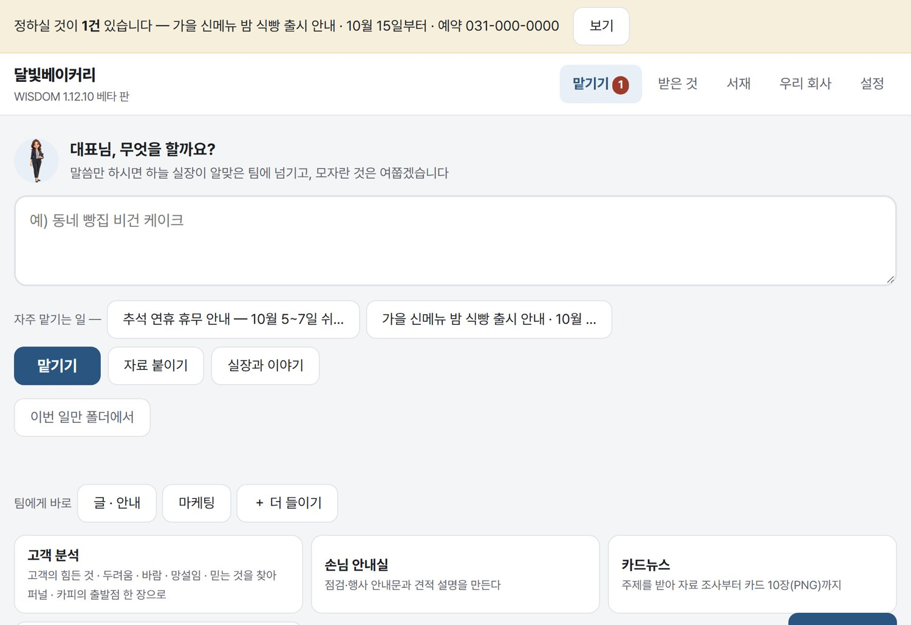
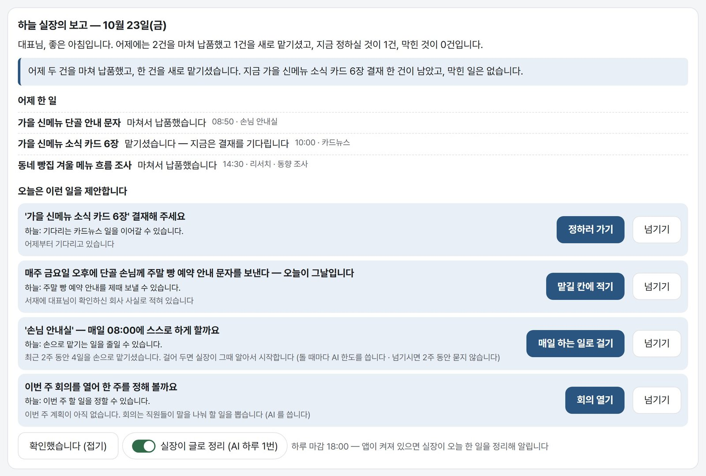
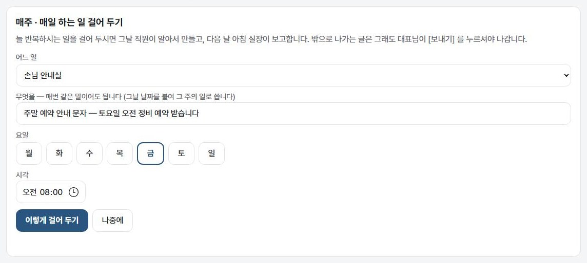
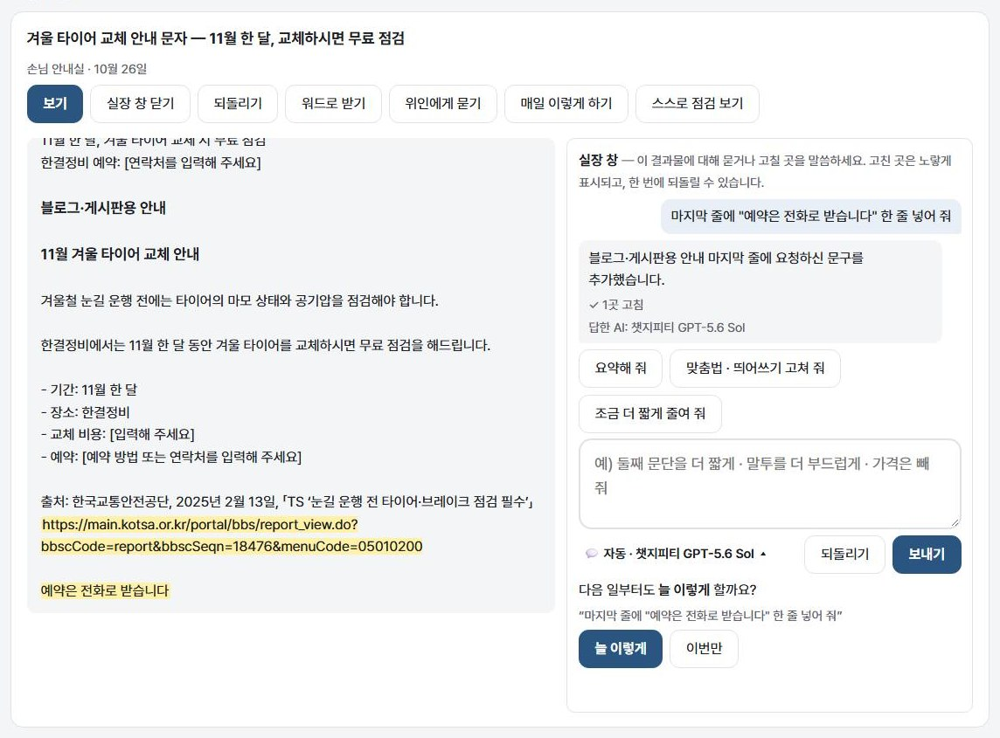

만든 이야기
"너무 어렵다" 를 가장 많이 들은 사람이 만들었습니다.
강의에서 만난 사장님 · 목사님들은 AI 를 쓰고 싶어 하셨지만, 잇고 설정하는 데서 멈추셨습니다. 그래서 배우지 않아도 되게, 그리고 확인 없이는 '다 됐다' 하지 않게 만들었습니다.
말로 맡기시면 내 컴퓨터 안의 AI 직원들이 안내문 · 카드뉴스 · 영상을 만들고, 다른 AI 가 확인합니다. 매주 반복하는 일은 한 번 걸어 두면 알아서 하고, 실장이 아침마다 보고합니다. 이미 쓰시는 챗지피티 · 클로드 요금제 그대로.
1.13.12 베타 · 윈도우 10 · 11 (64비트) · 맥 (애플 칩) · 리눅스 (우분투 22.04 이후 · 64비트) · 한 달 무료 체험 — 카카오톡으로 체험 코드 받기 · 설치 도움말

화면
컴퓨터가 가장 낯선 분이 혼자 끝까지 쓰실 수 있게 만들었습니다. 글씨 크기는 크게 · 보통 · 촘촘 가운데서 고르십니다.

화면은 보기용으로 세운 회사 '달빛베이커리' 입니다.
매주 하는 일
WISDOM 은 문서를 만드는 도구가 아니라, 반복되는 일을 넘겨받아 스스로 돌리는 직원입니다. 매주 금요일 안내 문자, 월요일 아침 동향 조사 — 한 번 걸어 두시면 그날 직원이 알아서 시작합니다.

체험이 끝나기 닷새 전에는 실장이 한 달 성적표를 드립니다 — 맡기신 일 · 대표님 없이 스스로 돈 일 · 고쳐 달라고 하신 횟수 · 직원이 배운 것. 숫자는 이 PC 의 기록에서 셉니다.
실장 창
[💬 실장과 고치기] 를 누르면 결과물과 실장이 나란히 열립니다. 한 줄 고치려고 처음부터 다시 맡기실 필요가 없습니다 — 몇 초면 그 부분만 바뀝니다.

파일 · 카드 · 영상 결과는 묻기만 되고, 고칠 말은 그대로 담당에게 보내 다시 만들게 합니다.
하는 일
업무마다 설명서 한 장이 있습니다 — 목적 · 결과물 · 순서 · 합격 기준 · 하지 말 것. 담당 직원이 그대로 일하고, 회사에 맞게 고쳐 쓰실 수 있습니다.
신메뉴 문자, 정비 안내, 수강 안내, 주보 광고. 카드뉴스는 장마다 그림으로.
목소리 · 배경음악 · 자막까지. 유튜브에는 비공개로만 올립니다.
출처 주소를 코드가 직접 열어 보고, 없는 주소는 빼고 알립니다.
손님의 마음 여덟 칸부터 랜딩 페이지 · 배너 · 후속 메시지 · PDF 전자책까지.
교회를 쓰시면 설교 한 편을 한 주 자료(요약 · 소그룹 · 묵상 · 말씀카드)로 바꾸는 꾸러미도 함께 드립니다. 설교는 목사님이 하십니다.
실장
앱을 여시면 실장이 어제 한 일과 오늘 할 일을 먼저 말씀드립니다. 제안은 제안일 뿐 — 단추를 누르셔야 일이 시작됩니다.
보고 글과 제안 이유는 실제 AI 가 보기 회사의 기록으로 쓴 것입니다. 사실에 없는 숫자를 쓰면 코드가 그 글을 버립니다.
확인
"다 했습니다" 라는 말만으로는 끝난 것으로 치지 않습니다. 쓴 AI 와 다른 AI 가 합격 기준대로 하나씩 따지고, 코드가 셀 수 있는 것은 코드가 셉니다.
직원 · 위인
직원마다 얼굴 · 레벨 · 능력치 · 경력이 있고, 결재받은 일에서 배운 것을 기억합니다. 직원 자리에 위인을 앉히면 그분의 방식으로 일합니다.
비용
WISDOM 은 이 PC 에 로그인해 둔 AI 프로그램을 불러 일합니다. 이미 내고 계신 요금제 한도에서 쓰이고, 열쇠(API 키)를 따로 만드실 필요가 없습니다. WISDOM 은 AI 를 되팔지 않습니다.
챗지피티 · 클로드 · 구글 AI 요금제로 로그인한 프로그램
요금제 말고는 없습니다
대표님 계정에서 직접 만든 열쇠로. 없으면 윈도우에 든 한국어 목소리를 씁니다
무료 한도 안에서는 없습니다
그록 · 오픈코드처럼 쓴 만큼 청구되는 AI. 더할 때 화면이 먼저 여쭙니다
그 회사에 쓴 만큼
한도가 차면 멈추고, 까닭과 다시 쓸 수 있는 때를 알립니다. 클로드 크레딧이 바닥 가까우면 부르지 않고, 돈이 나가는 쪽으로 저절로 바꾸지 않습니다.
개인정보
자료와 결과물은 대표님 PC 에만 남습니다. PC 밖으로 나가는 것은 일을 맡길 때 그 AI 회사로 보내는 내용뿐입니다.
만든 이야기
"너무 어렵다" 를 가장 많이 들은 사람이 만들었습니다.
강의에서 만난 사장님 · 목사님들은 AI 를 쓰고 싶어 하셨지만, 잇고 설정하는 데서 멈추셨습니다. 그래서 배우지 않아도 되게, 그리고 확인 없이는 '다 됐다' 하지 않게 만들었습니다.
설치
아래에서 쓰시는 컴퓨터의 단추를 누르세요. 받은 파일에 마우스 오른쪽 단추 → [압축 풀기]. 관리자 권한은 필요 없습니다.
처음 켜면 실장이 체험 코드부터 일할 AI 로그인 · 회사 자료 · 구글 · 유튜브까지 하나씩 같이 준비합니다. 필요 없는 것은 건너뛰세요.
윈도우 · 맥 · 리눅스 설치 파일과 사용법 설명서 PDF 가 구글 드라이브 한 폴더에 있습니다. 단추를 누르면 폴더가 열리고, 쓰시는 컴퓨터의 파일을 고른 뒤 위쪽 [다운로드] 를 누르세요. 판이 바뀌면 같은 자리에 새 판을 올립니다.
한 달 무료로 써 보세요. 처음 켤 때 실장이 묻는 칸에 체험 코드를 넣으시면 그날부터 30일 동안 모두 쓰실 수 있고, 끝나기 닷새 전에 실장이 한 달 성적표를 드립니다. 코드는 카카오톡으로 "체험 코드" 라고 보내 주시면 드립니다. 30일이 지나도 만드신 자료는 그대로 남고, 새 일 맡기기만 이용권이 있어야 합니다.
궁금하신 것은 카카오톡 오픈채팅방에서 물어보세요.
맥이나 리눅스를 쓰시면 — 맥에서 처음 열 때 · 리눅스에서 설치할 때